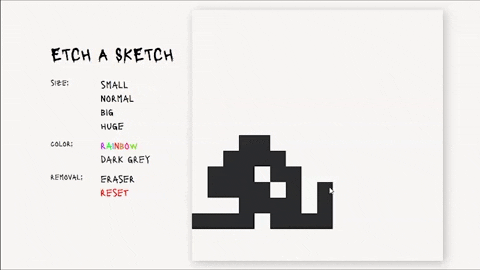
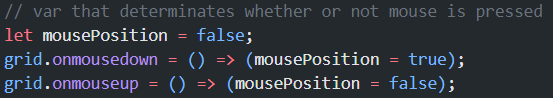
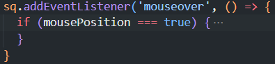
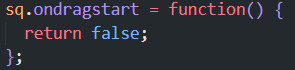

challenges
- Squares are overflowing
- Squares have a fixed size
- Two event listeners added to the same element
- 'Not allowed' cursor 
Originally, I assumed that I will tackle the squares' layout by using Flexbox. After lots of maneuvering this is the best I could achieve:

At this point, I knew that re-learning Grid, after years of not using it, will do the trick. And I was right.

At first, I defined each square's width and height by px x px. After I applied the Grid layout, I started wondering how to prevent having to set a different px value for every size. I switched to already known relative units: vh/vw, em, rem, %. To no avail.
A solution to this problem came instantaneously after learning CSS Grid's fr unit.
Since I wanted squares to change color during mouse press and hover simultaneously, I thought I could nest one event listener inside another. Well, turns out you can't. At least I couldn't make it work.
I needed to find a way to omit one of the listeners, so I declared mousePosition variable:
And used in an if statement inside of the 'mouseover' event lister:
Since I started working on this application, I encountered this random cursor change while coloring squares. At first, I assumed that it was my mouse (that had been dropped countless times) just acting up, so I simply ignored it. When I was finishing this project, however, and my to-do list got smaller and smaller, I started thinking that maybe it was not my mouse's fault at all.
W3Schools explains that a not allowed cursor implies that "The cursor indicates that the requested action will not be executed". So I started thinking: What action does the browser think I want to do here? I had no idea, angry and frustrated, I abandoned the whole project until I dragged the Google logo on my homepage a few days later. And that was when it hit me: the browser did not allow me to drag squares! Of course!
So I made each hovered-over square undraggable, by this line of code:
